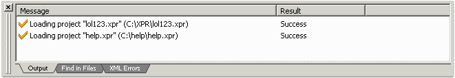
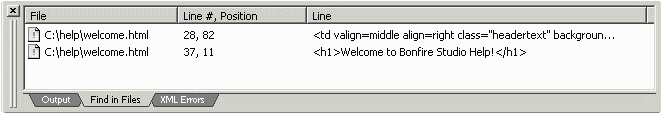
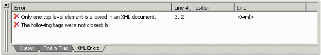

The Output window displays program messages, such as errors and action notifiactions (e.g. loading of a project), find in files results, and xml parsing messages.
- Application messages:

- Find in Files results:
Note: You can double-click on a result, and the specified file will open, selecting the search text.

- XML messages:
Note: This screen gets cleared after a successfull parsing.
